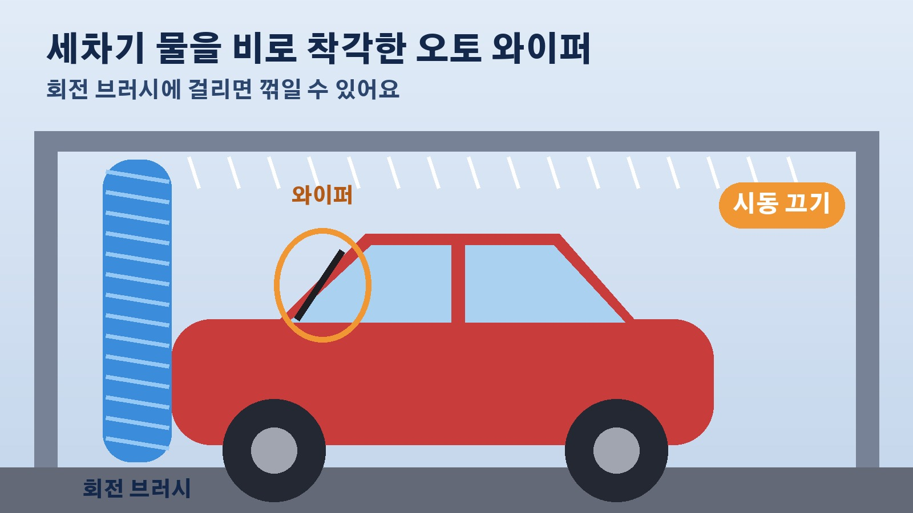

자동세차기 안에서 시동 켜 두면 생기는 일, 오토 와이퍼 꺾임과 엔진룸 물 유입 그리고 고장 책임까지
주유소에서 기름을 넣고 자동세차기 앞에 줄을 서 있으면 한 번쯤 고민되실 거예요. 날이 덥거나 추우면 에어컨이나 히터를 켜 둔 채 그대로 들어가고 싶어지거든요. 그런데 셀프 자동세차기마다 시동을 꺼 달라는 안내문이 빠짐없이 붙어 있는 데는 이유가 있습니다. 코리아올썸이 10월 22일 정리한 내용을 바탕으로, 세차기 안에서 시동을 켜 두면 어떤 일이 생길 수 있는지, 고장이 나면 누가 책임을 지게 되는지 차례로 짚어 볼게요.
세차기 안에서 시동을 꺼야 하는 이유
세차기가 도는 시간은 몇 분 남짓이지만 그동안 시동을 켜 두면 생각보다 큰 손해로 이어질 수 있습니다. 기사가 꼽은 이유는 크게 세 가지예요. 차에 달린 여러 장치가 제멋대로 움직이는 오작동을 막고, 차가 의도치 않게 움직이는 것을 막고, 전기 계통이 고장 나는 것을 막기 위해서입니다. 요즘 차에는 센서와 전동 장치가 많아서 예전보다 세차기 안에서 생길 수 있는 문제가 훨씬 다양해졌다는 점도 함께 기억해 두시면 좋겠습니다.
오토 와이퍼와 전동 장치가 세차기 안에서 움직이면
비를 감지하면 저절로 움직이는 오토 와이퍼, 자동으로 올라오는 안테나처럼 요즘 차에는 알아서 작동하는 기능이 많습니다. 전동 사이드미러, 전동 슬라이드 도어, 파워 윈도처럼 센서가 반응하거나 스위치에 손이 살짝 닿기만 해도 움직이는 장치도 있고요. 세차기 안에서 이런 장치가 움직이면 부서지거나 차 안으로 물이 들어올 수 있습니다. 대표적인 예가 오토 와이퍼인데요, 세차기에서 쏟아지는 물을 비로 착각해 움직이다가 회전 브러시에 걸려 꺾일 수 있다고 합니다. 시동을 꺼 두는 것이 이런 일을 막는 가장 확실한 방법입니다.
차가 조금만 밀려도 차와 설비가 함께 망가진다
세차 도중 브레이크와 가속 페달을 헷갈려 밟는 일은 드물겠지만, 브레이크에서 발을 떼면 차가 저절로 조금씩 나아가는 크리프 현상이나 전동 브레이크 오작동으로 차가 앞뒤로 살짝 움직일 가능성은 남아 있습니다. 세차기 안에서 차가 움직이면 기계와 부딪혀 차와 세차 설비가 모두 망가질 수 있어요. 이 역시 시동을 꺼 두면 확실하게 막을 수 있는 부분입니다.

엔진룸으로 들어가는 물, 하이브리드차와 전기차도 예외가 아니다
기사에 따르면 한 주유소 운영사는 홈페이지에서 시동을 켠 채 세차하면 엔진룸 안으로 물이 들어가 전기 계통이나 전자 제어 부품이 손상될 수 있으니 세차기를 쓸 때는 반드시 시동을 끄라고 안내하고 있습니다. 차는 큰비 속에서도 달릴 수 있게 만들어졌지만, 세차기는 높은 압력의 물을 여러 방향에서 집중적으로 뿌린다는 점이 비와 다릅니다. 엔진이 돌면서 냉각 팬이 공기를 빨아들이면 그 흐름을 따라 물이 엔진룸 안쪽까지 들어갈 수도 있고요. 하이브리드차나 전기차도 마찬가지입니다. 주행 준비 상태를 뜻하는 레디 표시가 켜져 있다면 시스템이 켜져 있는 것이므로 전원을 완전히 꺼야 합니다. 세차 전에는 시동을 끄는 것과 함께 사이드미러를 접고, 오토 와이퍼 기능을 끄고, 창문이 완전히 닫혔는지도 확인해 두세요.
시동 켜고 들어갔다가 고장 나면 누구 책임일까
안내를 따르지 않고 시동을 켠 채 세차기를 썼다가 사이드미러나 와이퍼가 부서지거나 차 안으로 물이 들어와도 그 책임은 이용자 본인에게 돌아갑니다. 기사는 실제로 이런 사례가 많이 보고되고 있다고 전했는데요, 세차기까지 망가뜨렸다면 설비 수리비를 청구받을 수도 있습니다. 날이 추워지는 요즘은 챙길 것이 하나 더 있습니다. 영하의 날씨에 세차하면 문틈이나 열쇠 구멍, 와이퍼에 남은 물이 얼어 문이 안 열리거나 와이퍼가 유리에 들러붙을 수 있으니 세차가 끝나면 문틈과 고무 부분의 물기를 닦아 두는 것이 좋습니다. 세차 직후에는 젖은 브레이크가 잘 듣지 않을 수 있어서, 천천히 달리며 브레이크를 가볍게 몇 번 밟아 물기를 말려 주라는 것이 기사의 당부입니다.
참고한 기사: 코리아올썸 시동 끄지 않으면 지갑 털린다, 자동차 세차 엔진을 켜두면 벌어지는 놀라운 일 2026년 10월 22일
태그
자동세차 자동세차기 세차시동 오토와이퍼 셀프세차 주유소세차 세차주의사항 하이브리드세차 전기차세차 겨울세차